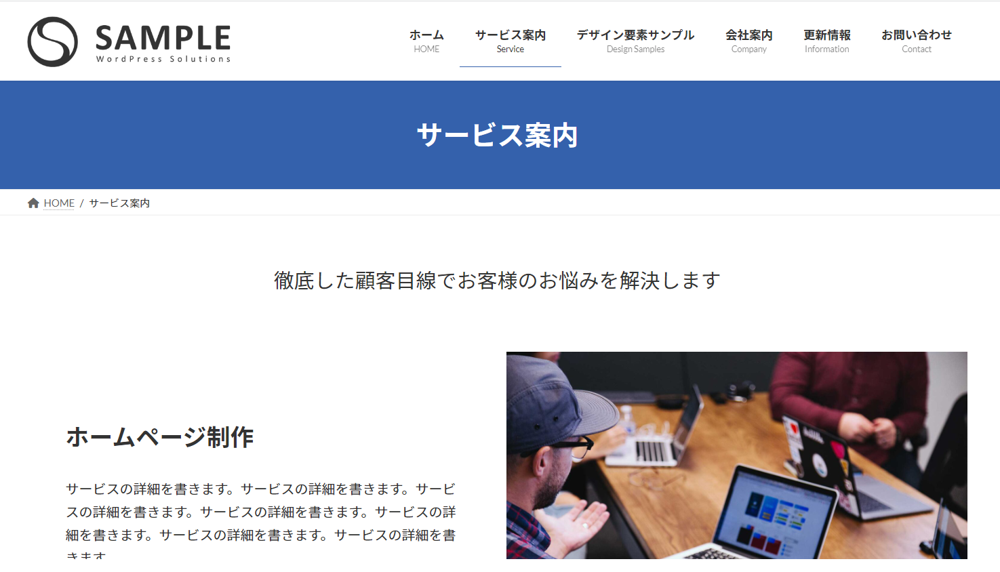
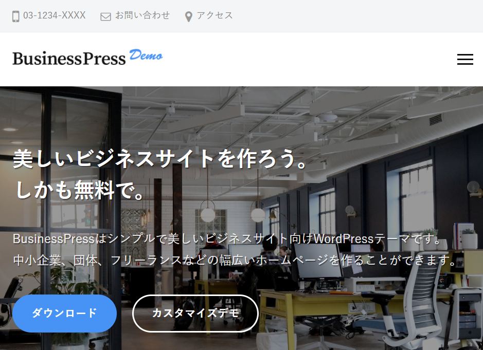

このページでは企業サイトを構築する時に人気の「法人向けのワードプレステーマ」を紹介しています。 紹介しているテーマはどれもコーポレートサイトを制作することに向いているテーマになっています。
有料テーマ、無料テーマどちらも紹介しています。自社の費用にあわせてテーマを選んでください。
今回紹介するテーマはその大半が登録者数が1万人を超えている実績のあるテーマになります。 それぞれどんな特徴があるのか紹介していきましょう。
| 会社名 | 料金 | ジャンル | 特徴 |
|---|---|---|---|
| TCD | 有料 | オールジャンル | 国内シェアNo1でこれまでに10万ユーザーが登録。ビジネスだけに留まらず様々なジャンルのテーマを販売しています。 |
| Lightning | 無料・有料 | 企業サイト・店舗向けサイト | WordPress.org公式ディレクトリに掲載されているインストール数7万件以上（※3月時点）の人気テーマ |
| LIQUID PRESS | 無料・有料 | 企業サイト | 累計39000ダウンロード。Wordpress公式に登録されている有料テーマ。ブロックエディターに対応し、37種類のブロックを採用。 |
| BusinessPress | 無料 | 企業サイト | シンプルで美しいビジネスサイト向けテーマ。中小企業、団体、フリーランスの方に。 |

TCDはコーポレートサイト、メディアサイト、店舗向けなど100種類近いワードプレステーマを提供している会社になります。 累計のユーザー数は10万人を超えています。
TCDデザインと呼ばれる独自の編集機能を備えているのが特徴。ブロックエディターには一部対応しています。
| 詳細 | |
|---|---|
| 会社名 | TCD |
| テーマ数 | 100種類 |
| 用途 | オールジャンル |
| ブロックエディタ | 一部対応 |
| 種類 | 100種類 |
企業サイトや店舗サイトなどビジネス系のサイト作りに向いている無料テーマ。無料版からグレードアップして有料プランへの変更も可能になっているため 最初は無料で作ってみたい方に適しています。wordpressの公式テーマにも選ばれていて、これまで7万件近いダウンロード数になっています。

ビジネスプレスは、法人や団体、フリーランスなど「ビジネス用向け」のワードプレステーマになります。企業サイトに最適なフラットデザインを採用しています。
「フォント最適化」による美しいデザイン。Gutenbergエディターに対応。簡単編集によるページ作成が出来ること。このように3つの特徴を持っています。その特徴のとうり、モダンなUIになっています。

demiglaze
Web制作を始めて約19年になります（HTML/css、Photoshop、Webマーケティング）。2005年から当サイトの運営を開始。 これまでに300個以上のドメインを取得、10社を超えるレンタルサーバーを利用してきました。